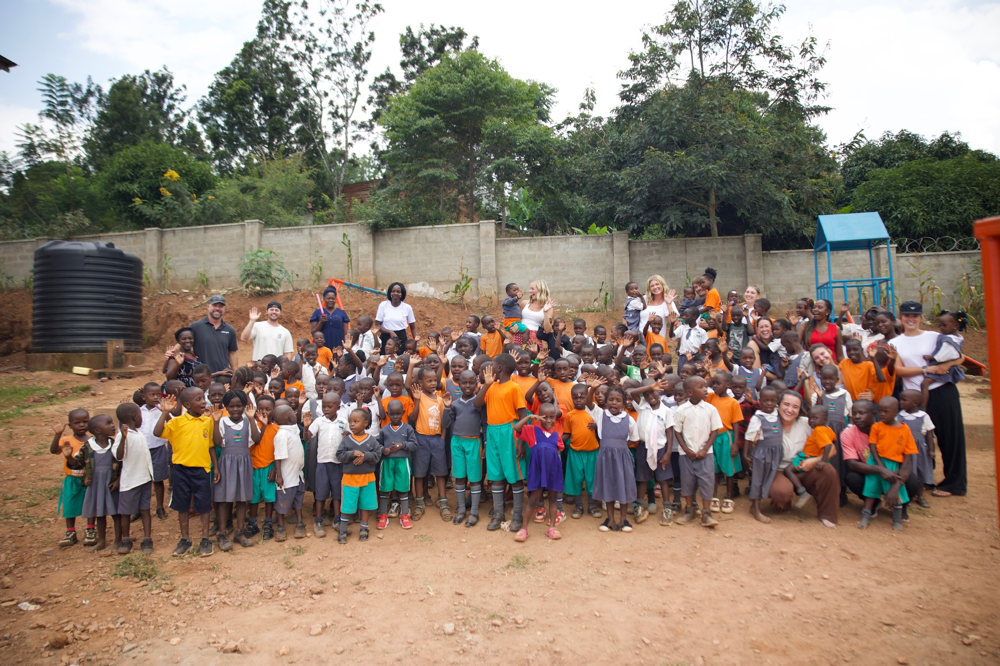
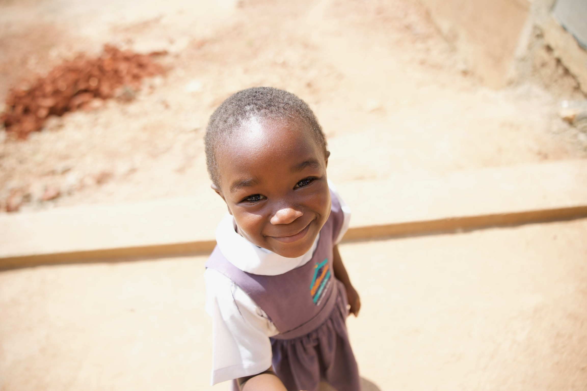
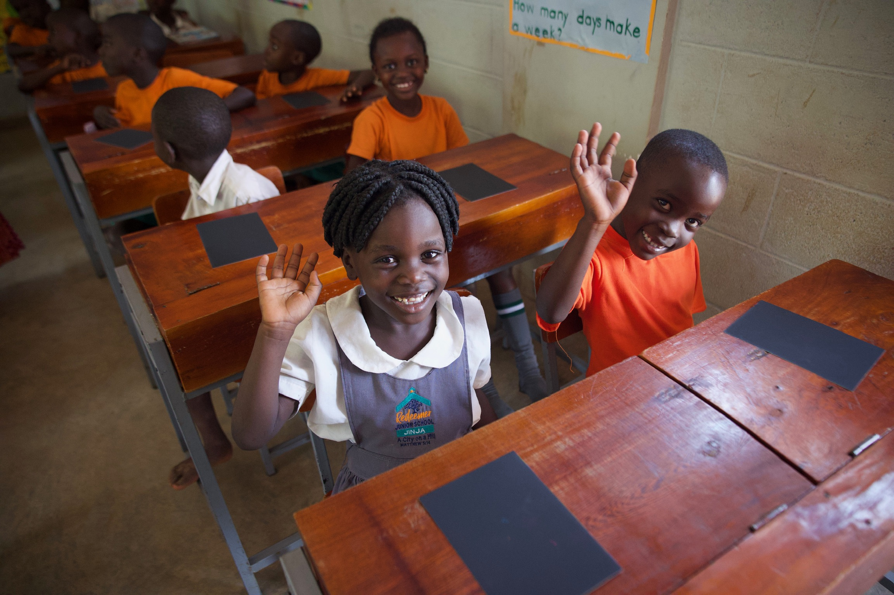
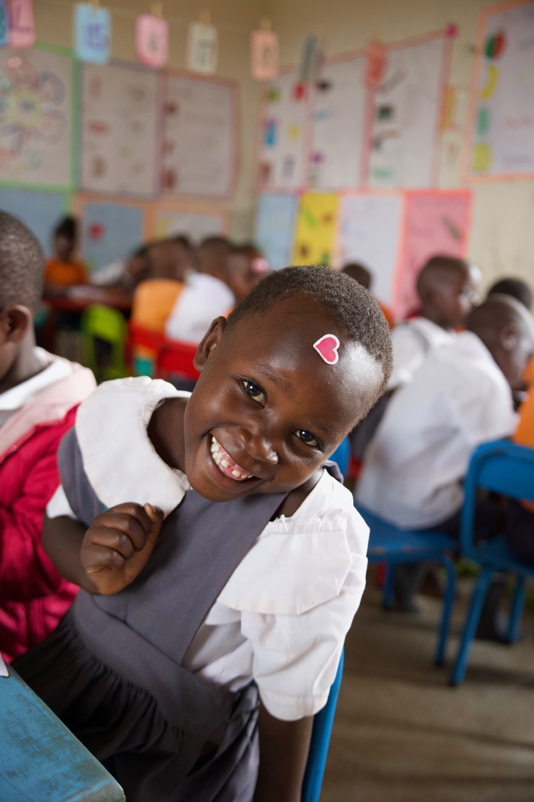

The Classroom Crisis: Inside Uganda's Fight for Education
Uganda has one of the youngest populations in the world, with children under 15 making up nearly half of its 48 million people. Yet despite this youth-driven demographic, access to quality primary education remains deeply unequal. In rural districts like Karamoja and Moroto, fewer than 40% of children complete primary school — and the reasons are familiar: understaffed classrooms, crumbling infrastructure, and costs that most families simply cannot absorb.
The Ugandan government abolished tuition fees for primary school in 1997 under its Universal Primary Education program, but hidden costs persist. Uniforms, exercise books, and examination fees accumulate into amounts that push families toward impossible choices. For a household earning less than $2 a day, sending three children to school can consume a quarter of total income. The result is a self-reinforcing cycle: parents without education who cannot advocate for their children's schooling, and children who leave school before they can read.

Organizations working on the ground point to a compounding crisis. Teacher absenteeism runs as high as 27% in some districts, according to a 2023 World Bank education assessment. Classroom sizes routinely exceed 80 students per teacher, and many schools lack basic sanitation — a particular barrier for girls, who drop out at disproportionate rates once they reach adolescence. "The infrastructure problem is real," said one aid worker based in Kampala who asked not to be named, "but the deeper issue is that communities haven't yet seen education pay off in tangible ways."
That's where consumer-driven funding models are beginning to shift the landscape. Brands like Go Be Love are part of a growing movement linking everyday purchasing decisions to measurable outcomes overseas. When a customer buys a hoodie or a printed tee, a percentage of that sale goes directly to school construction, teacher salary support, and supply procurement in partner villages. The model is intentionally simple: the more people choose conscious brands, the more classrooms get built.

The results — even at small scale — are striking. In partner schools supported by Go Be Love, students now have their own desks, textbooks, and supplies. A school headmistress described the change plainly: "Before, children were sitting on the floor sharing three textbooks among thirty students. Now each child has a desk and their own materials. It changes how they see themselves." Attendance has increased by over 30% at funded schools, with improvements most pronounced among girls in the upper primary grades.

The broader argument is increasingly hard to dismiss. A 2024 UNICEF report found that every additional year of schooling increases an individual's future earnings by approximately 10% in sub-Saharan Africa. Over a generation, this compounds into transformative, community-wide change. For brands like Go Be Love, the appeal is both moral and practical: customers who understand the impact of their purchase become loyal advocates, not just buyers. The mission and the market, it turns out, are pointing in the same direction.